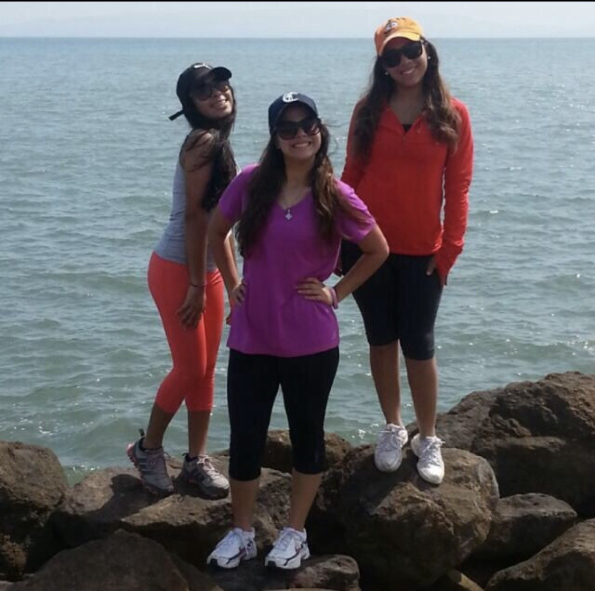
Venezuela
Viví · Estudié · Aprendí
Connecting places, people & possibilities.
Francis Méndez — hola, encantada ✦
Soy graduada en Turismo en la Universidad Complutense de Madrid. He tenido la oportunidad de vivir y estudiar en cuatro países, lo cual me ha permitido crear vínculos con diferentes culturas. En mi trayectoria profesional, he trabajado en restauración, en hoteles y en consultoría, y he aprendido algo que hoy guía todo lo que hago: un destino es mucho más que un punto en el mapa. Son las personas que lo habitan, las historias que guarda y todo lo que puede llegar a ser.
Ahora me estoy formando en marketing digital para ayudar a que lugares con mucho que ofrecer encuentren a los viajeros que los están buscando.
De dónde vengo, a dónde quiero llegar y el camino que ya he empezado a recorrer. Elige por dónde empezar… o sigue bajando y viaja conmigo.
Venezuela, España, Estados Unidos y Austria. He vivido y estudiado en cada uno de estos países y de todos me he llevado algo: otra manera de mirar las cosas, conversaciones en más de un idioma y una certeza que me acompaña siempre: la diversidad es una de las mayores riquezas que existen en las relaciones entre personas.
Soy bilingüe en español e inglés, y me siento como en casa conectando con gente de orígenes muy distintos. Si tuviera que elegir mi mayor fortaleza, sería esa: saber escuchar, adaptarme y encontrar puntos en común con quien tengo delante.
Por eso me apasiona el turismo. Porque, en el fondo, es exactamente eso: un encuentro entre personas, lugares y culturas. Y creo firmemente que, cuando se desarrolla de forma responsable y ética, puede convertirse en un motor fundamental para el desarrollo de un destino.
Mi trayectoria en operaciones hoteleras, restauración y consultoría me ha dado una visión amplia de cómo funciona el sector, desde la primera taza de café de la mañana hasta la estrategia que hay detrás. Hoy quiero sumar a todo eso el marketing digital.
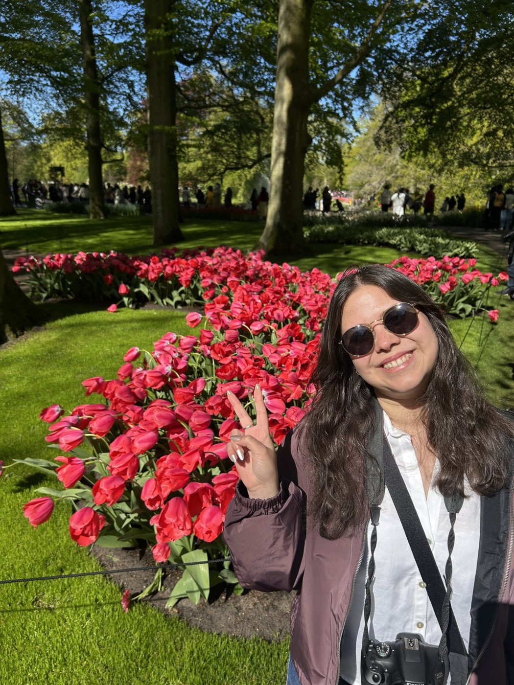

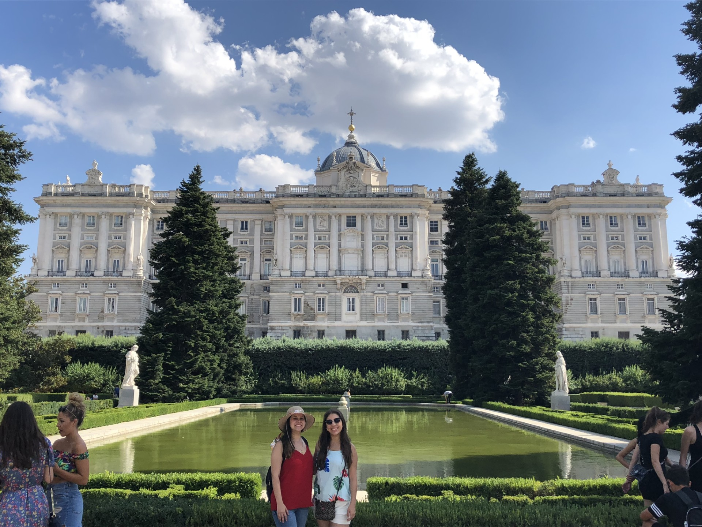
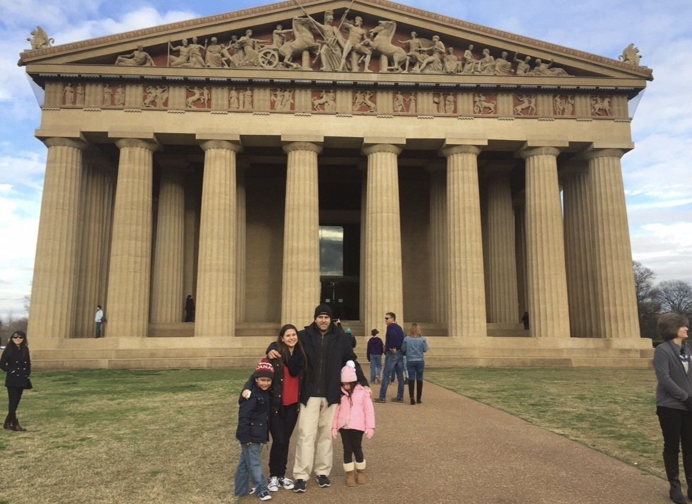
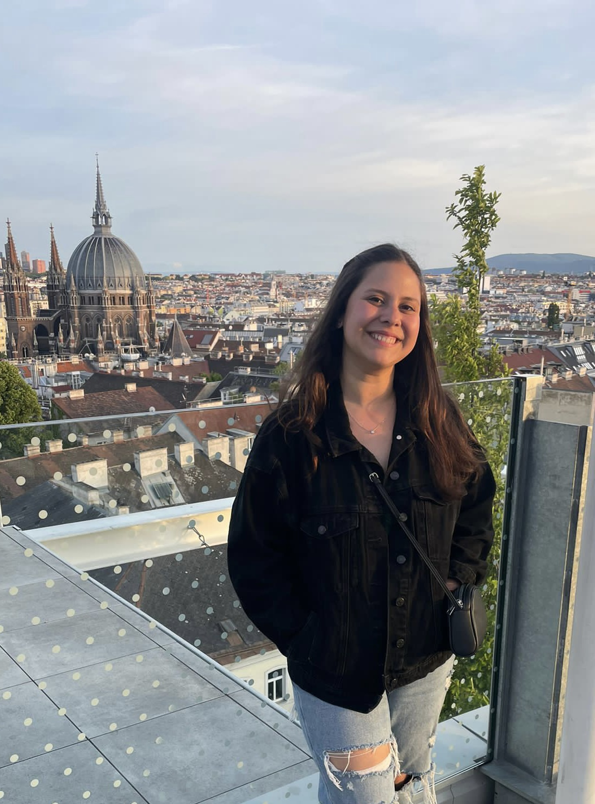
Me gusta supervisar los resultados de un proyecto y orientar a los equipos con estrategias y objetivos medibles en el tiempo. Pero, sobre todo, me gusta hacerlo cerca de las personas.
Me muevo por objetivos. Me gusta saber hacia dónde vamos y comprobar, por el camino, si estamos llegando.
Disfruto trabajando en equipo y conectando con la gente. Muchas veces el resultado depende de cómo nos relacionamos.
Si el plan A no funciona, busco el B. Y si hace falta, me invento el C. Adaptarme forma parte de mi manera de trabajar.
Siempre pienso que algo se puede hacer un poco mejor. Y me gusta intentarlo.
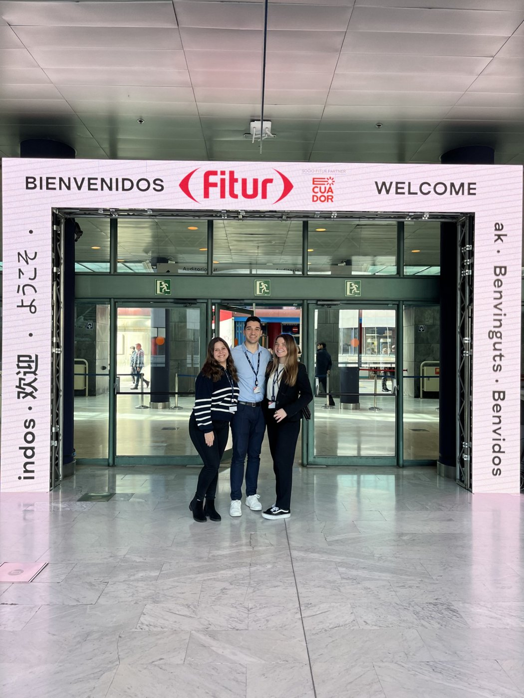
Universidad Complutense de Madrid. Mi base para entender el sector desde dentro: cómo se gestiona un destino, cómo se diseña una experiencia y por qué el turismo puede transformar un territorio.
En una de las ferias de turismo más importantes del mundo he gestionado clientes nacionales e internacionales, el seguimiento de pagos, consultas de expositores y la gestión de acreditaciones. Ver el sector desde ahí abre mucho la mirada.
Conocer cómo funciona un hotel por dentro me dio una visión muy práctica de cómo se construye, en el día a día, la experiencia de quien viaja.
Varios años como camarera y barista me enseñaron a cuidar cada detalle, a trabajar bajo presión y a conectar con cada cliente. Y me regalaron una pasión que conservo: el café (y el té, no nos olvidemos).
La consultoría me enseñó a analizar, a ver los proyectos con perspectiva y a orientar las decisiones hacia objetivos concretos y medibles.
La siguiente etapa del viaje. La pieza que quiero sumar a todo lo anterior. → sigue leyendo
Creo que el turismo, desarrollado de forma responsable y ética, puede ser un motor fundamental para el desarrollo de un destino.
— Francis
Estoy cursando un Máster en Marketing Digital porque quiero orientar mi carrera hacia el marketing de destinos turísticos.
Me interesan especialmente los lugares menos conocidos: esos que tienen paisajes, historia, gastronomía y gente increíble, pero que todavía no aparecen en el radar de los viajeros. Quiero ayudarles a ganar visibilidad, atraer visitantes y desarrollar su potencial de una manera responsable, ética y sostenible.
Porque mi interés no está solo en atraer turistas. Está en contribuir a que esos destinos crezcan generando valor tanto para quien los visita como para quien vive en ellos.
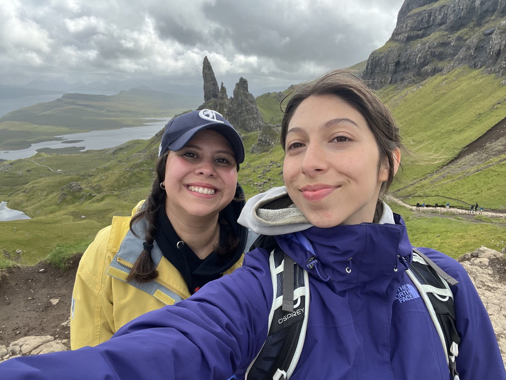
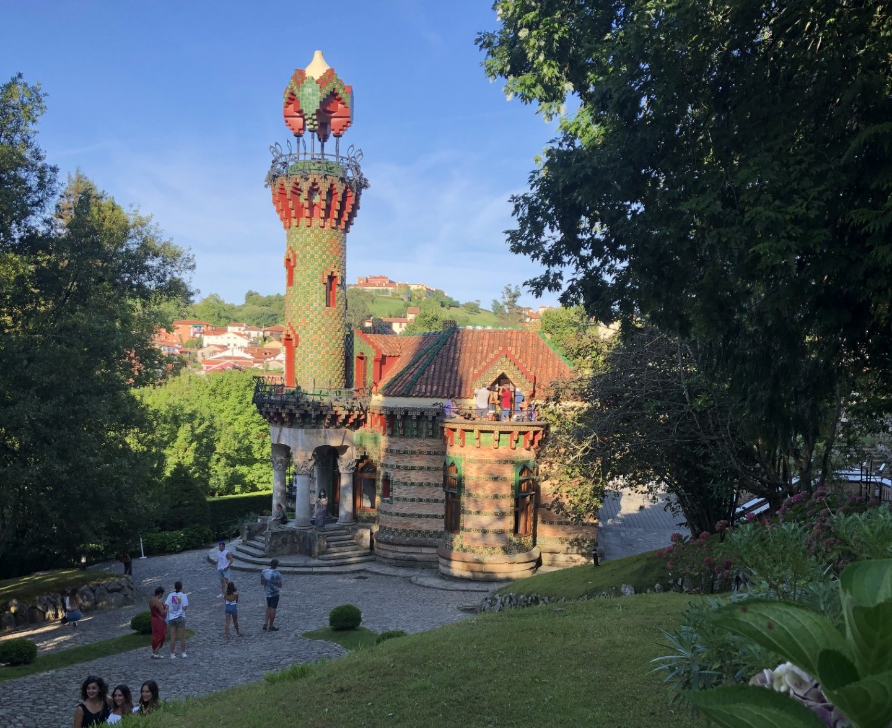
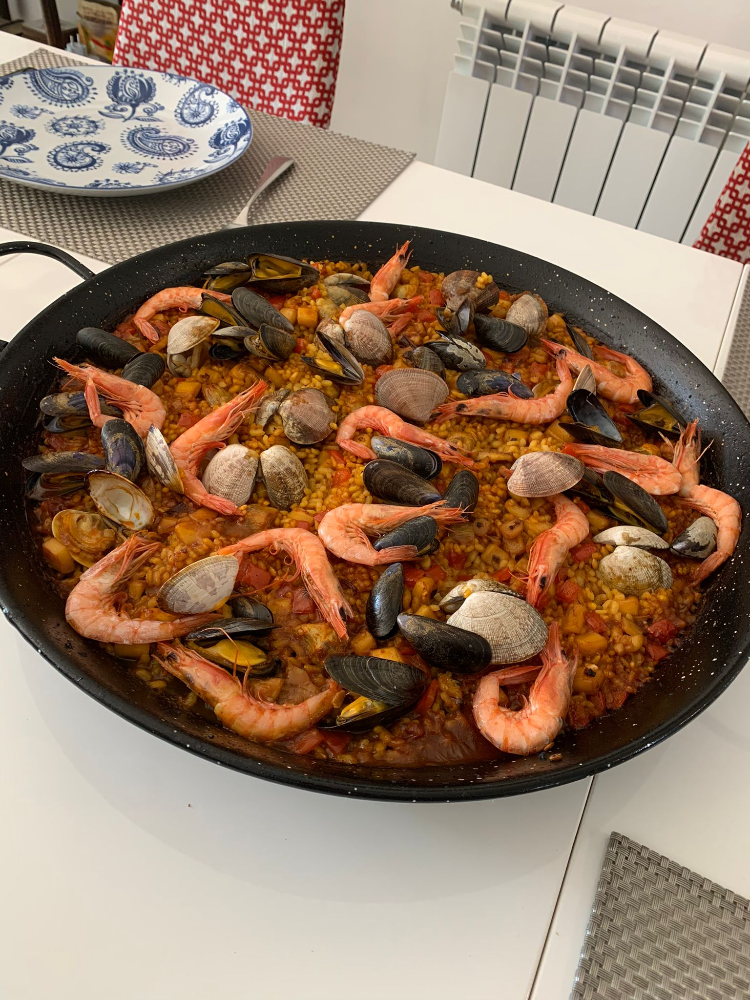
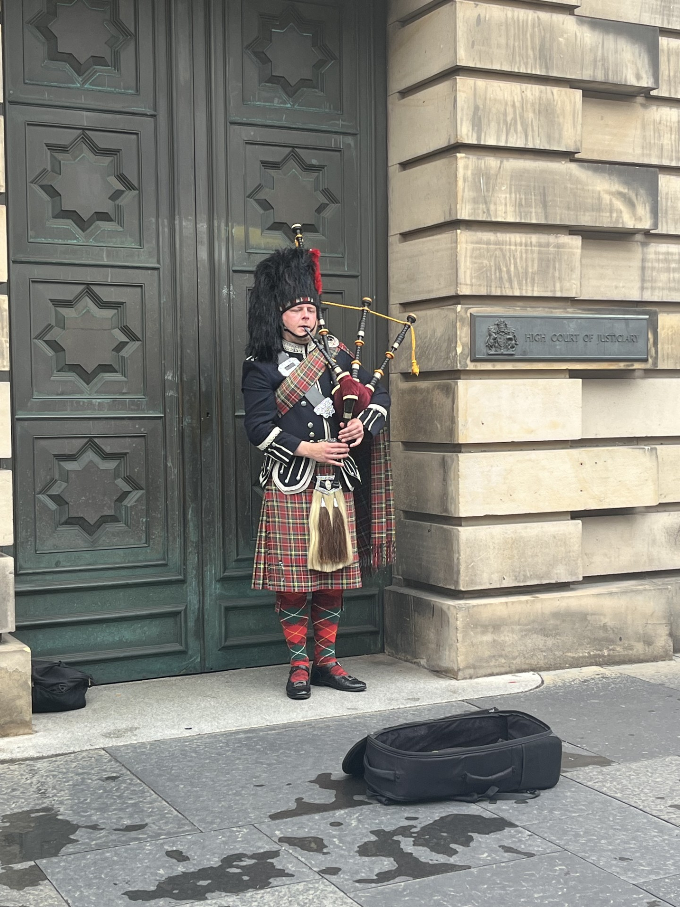
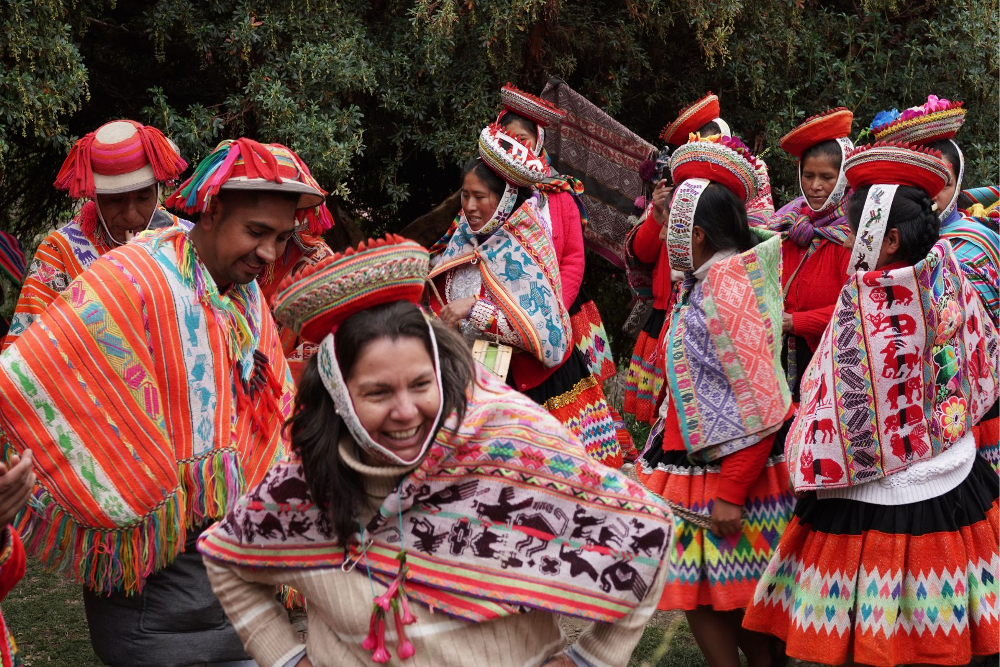
Ayudar a promover destinos que todavía no son suficientemente conocidos, contribuyendo a su crecimiento de una manera sostenible y ética.
Dar visibilidad a destinos turísticos menos conocidos.
Poner en valor la identidad cultural y los recursos de cada lugar.
Conectar destinos con viajeros que buscan experiencias auténticas.
Promover un turismo más responsable y sostenible.
Contribuir al desarrollo económico de las comunidades locales.
Crear estrategias de comunicación que generen resultados medibles.
No tengo todas las respuestas, pero sí tengo un plan. Esto es mi diario de viaje profesional: lo que ya llevo conmigo, lo que necesito seguir aprendiendo y los próximos pasos que voy a dar.
Lo he organizado como lo que es: un recorrido por etapas. Algunas ya están en marcha. Otras acaban de empezar.
Aplicar lo que estoy aprendiendo en el Máster en Marketing Digital y seguir formándome en todo aquello que me acerque al marketing de destinos:
Te lo cuento con sinceridad: hoy no uso las redes sociales de forma activa para promocionar mi marca personal. Este blog es mi primer paso.
El siguiente será trabajar mi perfil de LinkedIn para conectar con profesionales del turismo y del marketing digital, mejorar mis habilidades de comunicación y construir, poco a poco, una presencia digital coherente con mis objetivos.
Aprender de profesionales que hoy hacen lo que a mí me gustaría hacer mañana. Conectar con personas, instituciones y empresas vinculadas al marketing turístico y a la gestión de destinos.
Haber vivido y estudiado en cuatro países, hablar dos idiomas y sentirme cómoda entre culturas distintas son parte de lo que me diferencia. Quiero ponerlo al servicio de los destinos y de las personas que los visitan.
Hoteles, restauración y consultoría me han enseñado a mirar el turismo desde distintos lados de la barra. Sé que una buena estrategia tiene que conectar con la realidad operativa del día a día, y esa perspectiva quiero llevarla conmigo.
Cuento con lo necesario para seguir creciendo:
Ese es el destino. El camino lo estoy construyendo hoy, etapa a etapa, con lo que ya sé y con todo lo que me queda por aprender.
¿Trabajas en un destino, en una administración, en turismo o en marketing? ¿O simplemente te encanta viajar? Me encantará conocerte y conversar.